Vérifier : intensité du signal sonore à fournir car non linéarité du signal sinon
Distorsion
étudier la modulation d’un signal avec sur un aspect électronique.
¯¯¯¯¯¯¯¯¯¯¯¯¯¯¯¯¯¯¯¯¯¯¯¯¯¯¯¯¯¯¯¯¯¯¯¯¯¯¯¯¯¯¯¯¯¯¯¯¯¯¯¯¯¯¯¯¯¯¯¯¯¯¯¯¯¯¯¯¯¯¯¯¯¯¯¯¯¯¯¯
La modulation d’une onde ce fait au moyens de deux signaux :
- Une onde modulante (BF) (message à délivrer)
- Une onde porteuse (HF) (moyens de « transport »)
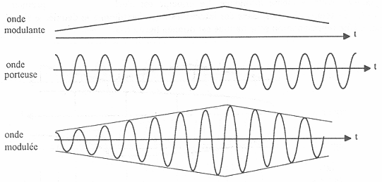
Forme du signal modulant :
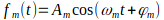
Forme du signal porteur :
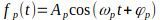
avec
Moduler, consiste à opérer un changement sur l’un des paramètre de 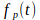 :
- Modulation d’amplitude se traduit par une action sur 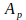
- Modulation de fréquence / pulsation se traduit par une action sur
- Modulation de phase se traduit par une action sur 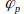
Il existe un indice 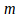 de modulation :
- si 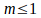 l’onde modulé ne change pas de signe
- si 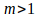 il y a surmodulation et l’onde modulé change de signe
Le taux de modulation peux s’écrire : 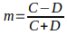
avec 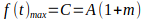
et 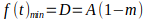
où 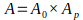 avec A0 le gain du modulateur.
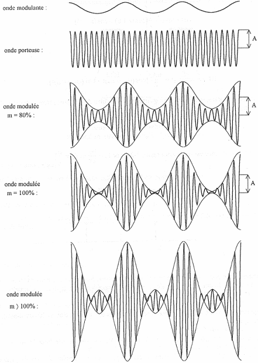
En outre, la méthode du trapèze permet de connaître grossièrement la valeur de m :
Il suffit d’appliquer le signal modulé HF à l’entrée Y de l’oscilloscope et le signal BF en phase avec le signal modulant appliqué à l’entrée X.
En mode X-Y, on obtient :
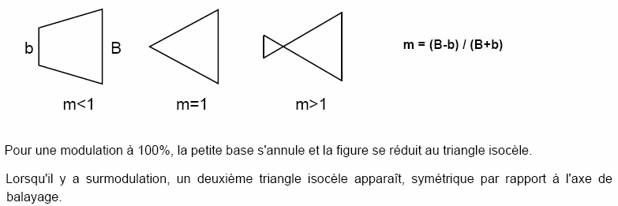